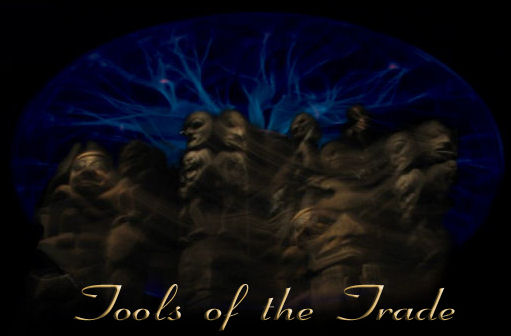

|
 |
|
You cannot learn a complex language without starting with the basics. There is nothing in our present culture or science’s knowledge base that can come close to understanding the actual design of "All". You first have to learn the language before you can read the schematics. The ancients did it this way and it probably took them thousands of years to accumulate the understandings. We can shortcut this process because the work has already been done. The knowledge is already a part of the human physic’s background. It is an illusion to think that discoveries are done in sequence of one another. Outside this three-dimensional reality there is no time. So discoveries are all there in their field of vibration. Every time a new understanding enters this environment called the present, it cascades backward and forward in time. Discoveries can be picked out of the "background" like fruit off a tree. Being a mystic, channeler, shaman, or what ever you want to title it is all about connecting outside the accepted "norm". There are thousands of different degrees or levels of connections possible, all being relevant to the individual themselves. Most people have experienced something in their life that was not quite in sync with what the culture could say as being normal. Normal in this case is defined as what the majority accepts and agrees upon. What is accepted and agreed upon determines "normal", and formulates a common belief. When people commit their beliefs to certain fields they invest heavily into these beliefs and only accept material that supports these beliefs. In that way it becomes a truth to them that defies contradiction and only seeks confirmation. Anyone can be a mystic, remote viewer, or channeler. It is all about how much time and effort you are willing to put into the practicing of the art. There is nothing more mysterious about it, you just need to practice. Even naturally gifted people (having spontaneous abilities) need to practice in order to refine and become efficient. There is little difference between those that are born with ability and those that need teaching and practice first. The only difference is in the timing. Some of us need to accomplish certain goals in life before being distracted by the mystic world. You may for instance need to raise a family and provide in a focused way towards this goal. Once things become more settled then abilities start to kick in. Others with the gifts at birth are making this their priority in life first (a decision made before birth). The only difference is in choice of creative expression. On this page you will finds links to fellow researchers and teachers that in my opinion are some of the best in their fields. Remember this is only my opinion and it is based on what I see as a balanced teaching effort. I do not condone fear teaching or teaching what tries to corral someone into only one-way of thinking.
Sculptures from Remote Viewing
HOME - New additions
|
|
Recommended Books and Websites:
International Remote Viewing Association - http://www.irva.org/
Dowsing - Joey Korn - http://www.dowsers.com/
Aromansse - http://www.aromansse.com/
Monroe Institute’s Hemi-Sync - The
Science Behind Holosync and
Astral Dynamics by Robert Bruce – book (ISBN 1-57174-143-7) Website: http://astraldynamics.com/
The Nature of Personal Reality – Seth – by Jane Roberts – and all her book. A reliable source - http://www.sethcenter.com/pages/bookstore.htm
Hank Wesselman, Ph.D. - all his books including an instructional book with CD called "The Journey to the Sacred Garden". http://www.sharedwisdom.com/books.html
The Kryon Material by Lee Carroll - http://www.kryon.com/altindex.html
Coast to Coast web site - http://www.coasttocoastam.com/
Michael Harner website - http://www.shamanism.org/
Sandra Ingerman - http://www.shamanicvisions.com/ingerman.html
William Buhlman - http://www.astralinfo.org/
Gavin Menzies - "new history" - http://www.gavinmenzies.net/
The First American:The Suppressed Story of the People Who Discovered the New Worldhttp://earthmeasure.com/chris_hardaker_bio.html Walter Russell - http://archive.org/details/WalterRussellTheSecretOfLight http://www.dowsers.com/walter-russell-books-descriptions-b/
Dr.
More Links - http://www.thelamplight.ca/schematicoftime/councillink.htm
Article from the U.S. Air Force Research Laboratory on Remote Viewing
William Dayholos January/2007© |
|
|